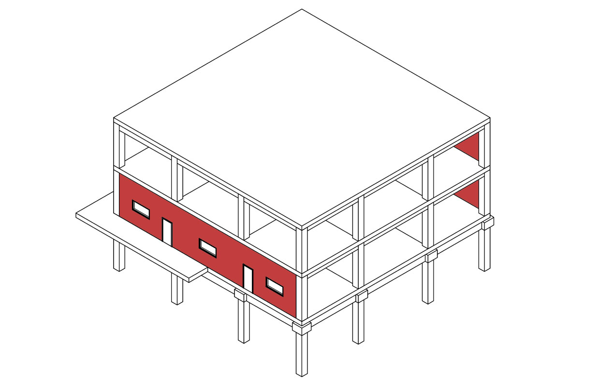
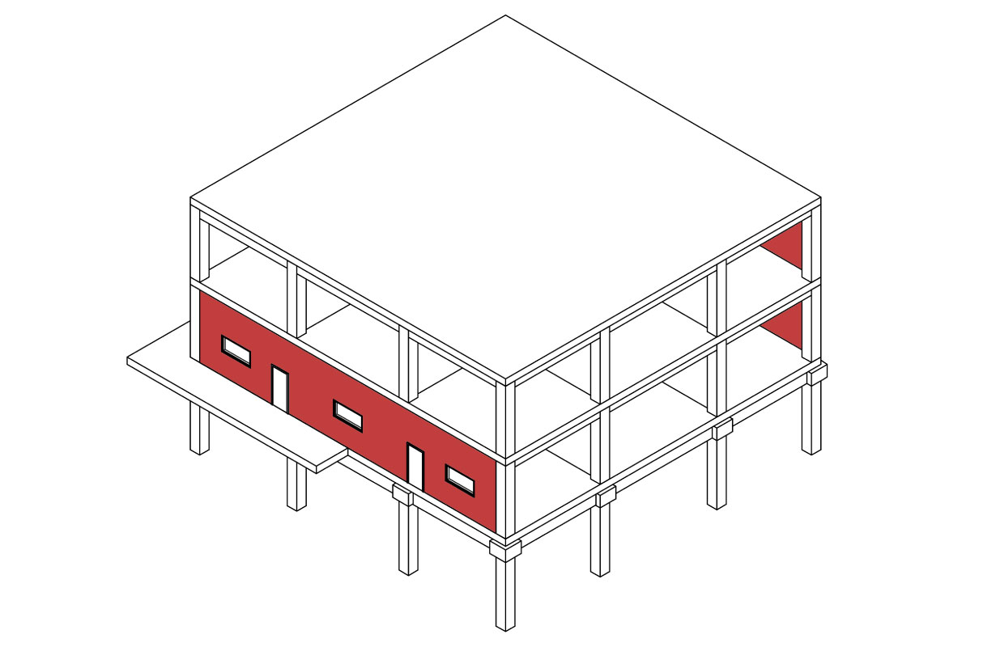
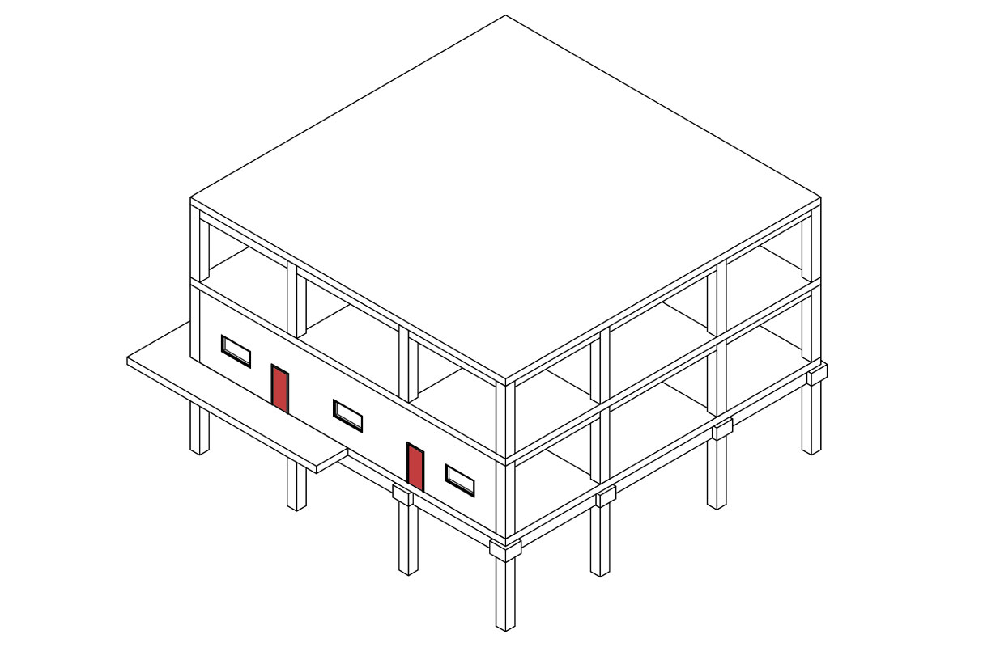
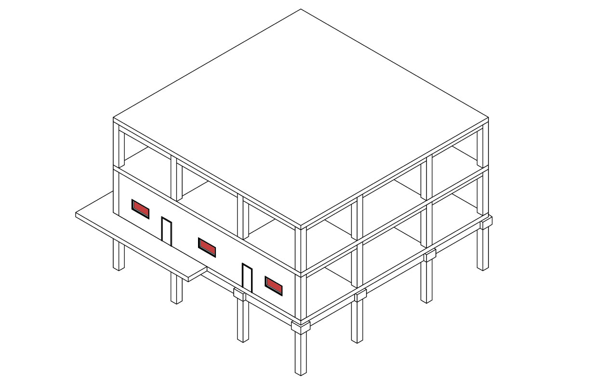
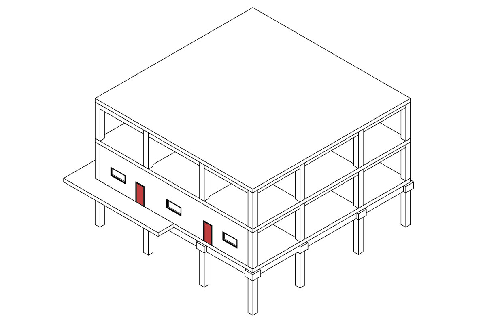
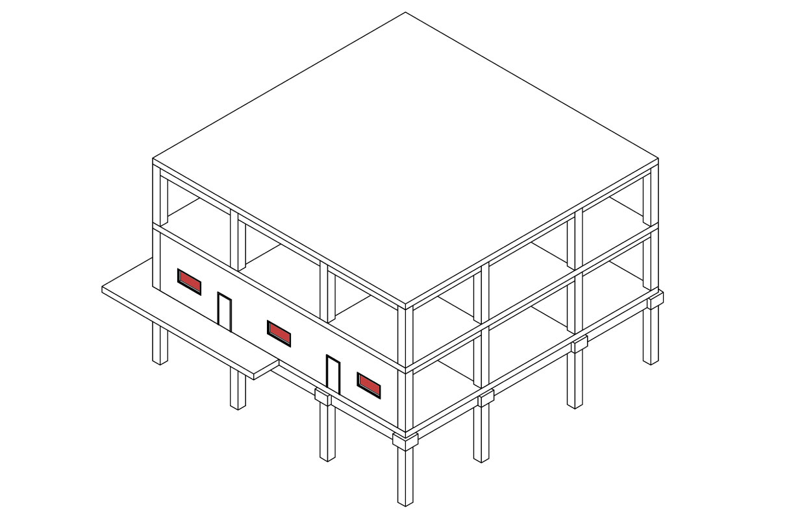

Elementos

 



 





Seleccione el sistema constructivo base a aplicar
{{ sc }}
{{ sc }}
{{ sc }}
Materiales
{{ material.value.key }}.
{{ material.value.name_material }}
{{ material.value.quantity | number: '1.2-2' }}
{{ material.value.unit_text }}
<
Edición de material
Nombre comercial
Cantidad
Unidad
Comentarios
Transporte 1
Tipo de transporte
distancia (KM)
Transporte 2
Tipo de transporte
distancia (KM)
Tiempo de vida del material
Tiempo de vida
Reemplazos
Fuente de información de impacto ambiental
<
Realiza tu búsqueda
{{ item.name_material }}
<
{{ dataMaterialSelected.name }}
{{ dataMaterialSelected.description }}
| Impacto |
|
Categoría de impacto ambiental |
|
Potencial | {{ element.value | slice: 0:9 }} | Unidad |
|
|---|
mexicaniuh
EPiC
<
{{ item.name_material }} -
EPiC
<
{{ item.name_material }} -
mexicaniuh
<
{{ dataMaterialSelected.name }}
{{ dataMaterialSelected.description }}
| Impacto |
|
Categoría de impacto ambiental |
|
Potencial | {{ element.value | slice: 0:9 }} | Unidad |
|
|---|